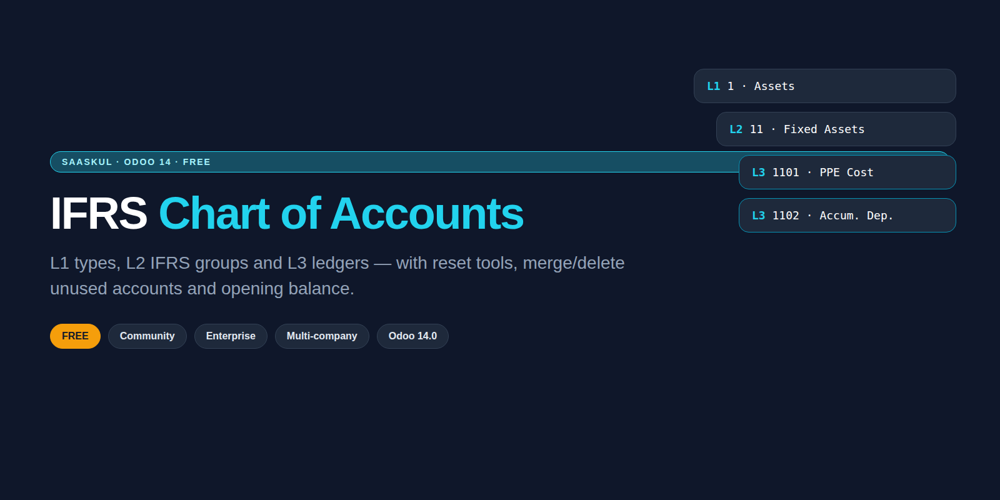

Structure your Odoo ledgers the IFRS way: L1 types, L2 groups and L3 codes. Reset numbering, merge unused accounts and post opening balances from one place.

Standard Odoo charts mix country templates, duplicate codes and leftover ledgers. This app gives you one IFRS-shaped tree and the tools to keep it clean.
✗ Codes jump between 4, 5 and 6 digits
✗ Groups do not match IFRS statements
✗ Unused ledgers pile up after every year
✗ Opening balance is a manual journal hunt
✓ Clear L1 / L2 / L3 coding rules
✓ IFRS group catalog ready to map
✓ Preview before you reset or merge
✓ Opening balance with retained earnings offset
Type, IFRS group and ledger code stay linked so reports and filters make sense.
Apply XXXC-style codes with a preview of every rename before you commit.
Rebuild ledger codes company-wise with options and a line-by-line preview.
Collapse duplicate ledgers and remove accounts with no history, safely.
Post opening journals with an automatic retained-earnings balancing line.
No Enterprise apps required. Extra report hooks load only when those modules exist.
Odoo 14.0 Community or Enterprise
Required apps: Accounting, Product, Purchase, Discuss
chart_of_accounts_saaskul
License OPL-1 · Author Saaskul
No. It runs on Community. Optional report hooks appear only if Enterprise report apps are installed.
No automatic wipe. Reset and regenerate tools show a preview first so you control what changes.
Yes. Codes and groups stay company-aware so branches keep their own ledger numbers.
Yes on the Odoo Apps Store. Setup help and custom mapping are available on request.
IFRS Chart of Accounts ships for Odoo 14 today. Need 15–19? We port the same L1/L2/L3 tools to your series. Message us on WhatsApp or email.
WhatsApp +971 56 256 8128 info.cpabooks@gmail.comNeed help mapping an existing COA or migrating from another ERP? The Saaskul team can help.
info.cpabooks@gmail.com